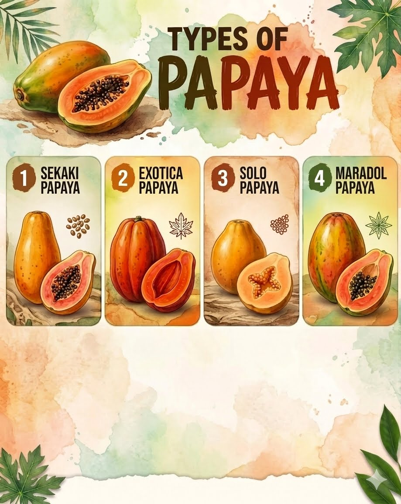

HISTORY
The papaya is native to tropical America, specifically Central America and southern Mexico.It was later introduced to Southeast Asia by Spanish and Portuguese explorers during the 16th century.Today, it is widely grown throughout the tropical regions of the world for its sweet, nutritious fruit.

TYPES OF PAPAYA
- Sekaki
- Exotica
- Solo
- Maradol
HEALTH BENEFITS
- Rich in Vitamin C – Provides a powerful boost to the immune system.
- Aids Digestion – Contains papain enzyme which helps break down proteins easily.
- Heart Health – High in antioxidants and fiber that protect arteries and reduce cholesterol.
- Good for Eye Health – Contains Vitamin A that helps maintain healthy vision.

HOW TO PLANT PAPAYA
Germinate Seeds
Collect fresh seeds, wash off the gelatinous coating, and dry them. Plant them in small starter pots with fertile soil.
Provide Full Sunlight
Papaya trees thrive best in warm tropical climates and require full, direct sunlight throughout the day to grow quickly.
Ensure Good Drainage
Water the plants regularly but avoid waterlogging. Papaya roots are very sensitive and can easily rot in standing water.
Apply Fertilizer
Use organic compost or balanced fertilizer regularly to promote healthy growth and fruit production.
Harvest the Fruits
Harvest papayas when the skin starts turning yellow and the fruits are fully mature.
FUN FACTS
- Papaya plants are not actual trees, but large semi-woody herbs.
- The enzyme papain extracted from raw papayas is used to tenderize meat.
- A papaya plant can start producing sweet fruits within 9 to 11 months from seeds.